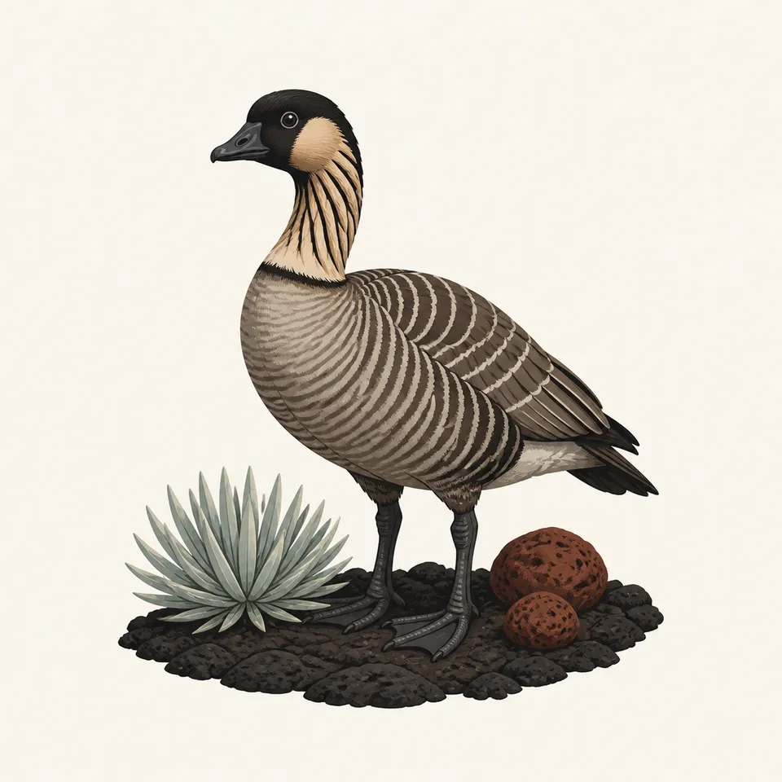
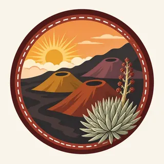

01
The summit bowl
A dormant volcano, in the foundation overview's words, with a crater that dominates the summit landscape. The road to the top was built so the crater stayed hidden until the vehicle arrived, and it opened in 1935.
TrailMark Archive Edition
Hawaiʻi | Maui
Part of Hawaiʻi National Park on August 1, 1916. Its own park on July 1, 1961.
Archive No. TM-HALE-040
National Park since 1961
Collection Maui summit
Park Overview
Haleakalā began as a section of Hawaiʻi National Park, established on August 1, 1916. It became its own national park on July 1, 1961.
The centennial page says promoters Lorrin A. Thurston and Thomas A. Jaggar brought the park into being, and that Jaggar called the crater at sunrise the greatest volcanic spectacle on earth. A 1960 statute, quoted on the Hawaiʻi Volcanoes legislation page, made the Maui portion a separate unit effective July 1, 1961. The 1961 timeline page says the old park was split into Haleakalā and Hawaiʻi Volcanoes.
The summit is 10,023 feet on both the centennial page and the foundation overview. Acreage does not match: the 2025 management page says 30,183 acres, and the centennial page says 33,265. No statistics page chooses. The shared figure is more than 30,000 acres. Wilderness is 24,719 acres on the management page and about 24,000 on the foundation overview. The shared figure is about 24,000 acres.
Emotional Thesis
Cinder cones sit inside a wide bowl, and a silversword blooms in the foreground. The foundation overview says the crater is about 20 miles around and that the rim rises more than 2,500 feet above the floor in several places. Jaggar's sunrise line is the reason the painting puts the sun on the cloud deck.
The same overview says the park rises from the coast to that summit within a few miles, and that the Kīpahulu rain forests are among the richest botanical regions in Hawaiʻi. The summit picture is only half the park.
Landscape Highlights
01
A dormant volcano, in the foundation overview's words, with a crater that dominates the summit landscape. The road to the top was built so the crater stayed hidden until the vehicle arrived, and it opened in 1935.
02
The centennial story says early rangers were already trying to save the rare ʻāhinahina, the silversword. The plant in the header is that campaign, not a count of how many remain.
03
The timeline says Kīpahulu Valley was authorized for inclusion in 1951, and the centennial page says a new section was added in 1976. Later additions in Kīpahulu and Kaupō are the coastal half the summit painting leaves out.
Wildlife
The foundation overview says invasive plants and animals have driven native species to extinction or severe decline, so wildlife and vegetation are intensively managed.

01
The extra drawing pairs a nēnē with a silversword on lava. Both are named on the park pages. Neither is a population.
02
The timeline says boundary fencing began in 1976 to keep out feral goats and deer.
03
Species found nowhere else are the centennial page's claim. A list of them is not copied here.
Geology
The foundation overview calls Haleakalā dormant and gives the summit at 10,023 feet. Wind, rain, temperature, and altitude shape the ecosystems between the coast and that top.
01
The crater is about 20 miles in circumference. In several places the rim is more than 2,500 feet above the floor.
02
The northern and eastern slopes and the Kīpahulu rain forests are named as the richest botanical ground.
03
The park is an International Biosphere Reserve. That designation is the overview's recognition of the contrast, not a second park.
Jaggar's line is about sunrise in the crater. Whether you need a reservation that morning is a current NPS question, not a line in this essay.
The road opened in 1935 and was built to hide the crater until the top. Weather at 10,023 feet is not the weather in Kahului.
The rain forest is the wet half. Trails and stream crossings there change with rain. Read the park page.
From 1941 to 1943 the public was shut out. That is history. A closure today is a notice, not that story.
Photography
A red bowl without the plant is a geology slide. The park's early work was also the ʻāhinahina.
01
The cloud deck in the header is the view Jaggar meant. Do not block the road for it.
02
Silverswords are the rare plant the rangers were already guarding. Stay on the rock. Do not pose inside one.
03
A summit picture and a Kīpahulu picture are two parks in one boundary. Say which one you made.
Field Notes
They hid the crater until the last bend of the road. The silversword was already the thing that could not be replaced.
TrailMark Field Notes

Badge Story
The mark is the summit bowl at sunrise, with an ʻāhinahina. A beach palm would be the wrong Maui.
Red cones, a cloud sea, one silversword.
A nēnē can be the animal. It is the reintroduced goose, not a count.
Do not reuse the Hawaiʻi Volcanoes lava lake. This volcano is dormant.
Archive No.040
LocationMaui
ReleaseSummit Mark
Stewardship / Safety
Intensive management is the foundation overview's own word. Current reservations, weather, and closures are on NPS.
Do not step into a silversword. The early rangers' job was to keep the plant.
The 1976 fence is for goats and deer. It is not a suggestion that the crater is a pasture.
Ten thousand feet changes the air and the temperature. The coast section is a different day.
Nēnē on the road are the reintroduced goose. Give them the lane.
Current conditions, fees, and alerts are on the National Park Service site.
Continue the Archive
They were one park until 1961. Hawaiʻi Volcanoes is the active pair of volcanoes. Haleakalā is the dormant summit and the Kīpahulu coast.